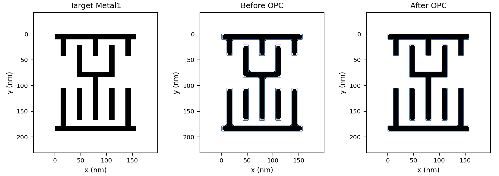

NOTES FROM THE WORKBENCH
배운 개념을 정리하고,
직접 만든 도구로 확인합니다.
반도체 공정과 소자, 전자회로와 신호를 공부하며 개념과 계산, 시뮬레이션 결과를 한곳에 기록합니다.
OPC 시뮬레이터 열기 ↗ 공부 노트 읽기 ↘LAYOUT / EXPOSURE / CORRECTION
01공부 노트
개념 하나를 이해하고, 식과 예제로 다시 확인하기.
반도체 공정 / 기초 노트반도체 소자 / 기초 노트전자회로 / 기초 노트신호와 시스템 / 기초 노트
OPC는 왜 마스크를 다르게 그릴까
Target · Mask · Print를 구분하고 Gaussian 노광 모델을 이해합니다.
MOS capacitor에서 문턱전압 읽기
일함수 차이와 산화막 전하, 공핍층의 역할을 연결합니다.
전압 이득의 크기와 부호 구분하기
파형의 peak-to-peak 비와 위상 반전을 따로 확인합니다.
같은 Z-transform에도 다른 신호가 있다
식과 함께 ROC를 확인해야 하는 이유를 정리합니다.
검색어에 맞는 노트가 없습니다.
02만들면서 배우기
계산 과정과 실행 결과가 함께 있는 프로젝트.

PROJECT 001 / COMPUTATIONAL LITHOGRAPHY
OPC Lab
마스크를 바꿔 패턴을 보정하는 도구
INV_X1과 NAND2_X4의 Metal1을 대상으로 Gaussian 노광과 threshold 현상을 계산합니다. 보정 전후의 IoU와 불일치 면적을 비교하고 결과를 저장할 수 있습니다.
시뮬레이터 실행 ↗원리 읽기03자료실
설명서와 실행 파일, 연구 기록을 따로 보관합니다.
공부 사이트와 GitHub 시작 가이드사이트 게시 · 프로필 구성 · 노트 관리PDF ↓OPC Lab 사용 설명서실행 순서 · 조건 · 저장 방법 · 모델 정의PDF ↓OPC 과제 요구사항 점검표배경 · 과제 가~바 · 검증과 제출 확인PDF ↓OPC 논문 작성 가이드목차 · 그림 계획 · 결과 해석 · 작성 순서PDF ↓한 파일로 실행하는 OPC LabPC 브라우저용 HTML · APK 파일 아님HTML ↓기본 조건 검증 수치개발 검증 실행값 · 두 셀의 전후 지표CSV ↓OPC 소스 코드계산 모델과 화면 코드 · 실행 설명ZIP ↓
04이 기록에 대하여
권덕규의 반도체·전자공학 학습 기록입니다. 개념을 식으로 정리하고 코드로 확인하는 과정을 쌓아갑니다.
사이트에는 개념 노트와 프로젝트 기록을 모읍니다. 강의자료 원본 대신 이해한 내용을 정리하고, 시뮬레이션 결과에는 조건과 모델의 범위를 함께 남깁니다.